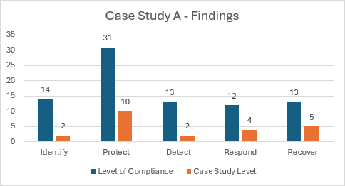

Case Study A
Case Study A is a football club competing in the fourth division of the Scottish Football pyramid, otherwise known as the Scottish League 2. Operating at a relatively high level in comparison to those outwith the footballing pyramid and league system, a certain level of financial and personnel resources are readily available to them when compared to those below. This is reflected in the gap analysis undertaken between the researcher and the case study - however, many gaps still made themselves present during the process. This is evident in the below figure presenting the case study findings:

From the above figure, we can clearly see that Case Study A only adhere to a mere 27.7% of requisites laid out by the hybrid cybersecurity framework, and so work needs to be done to ensure a quality level of cybersecurity hygiene.
Although a certain level of financial and personnel resources are available, they are nowhere near the resources available to the internationally known football clubs, and so compromises may have to be made when allocating resources to the relevant requisite areas.